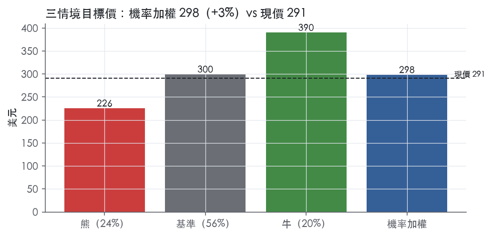
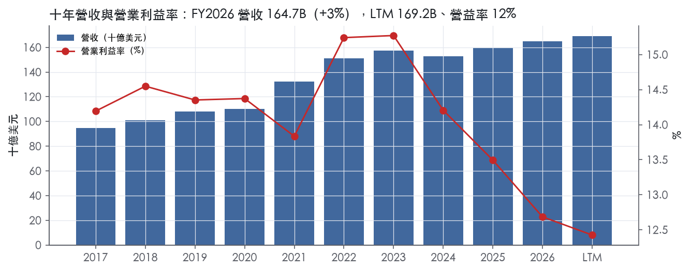
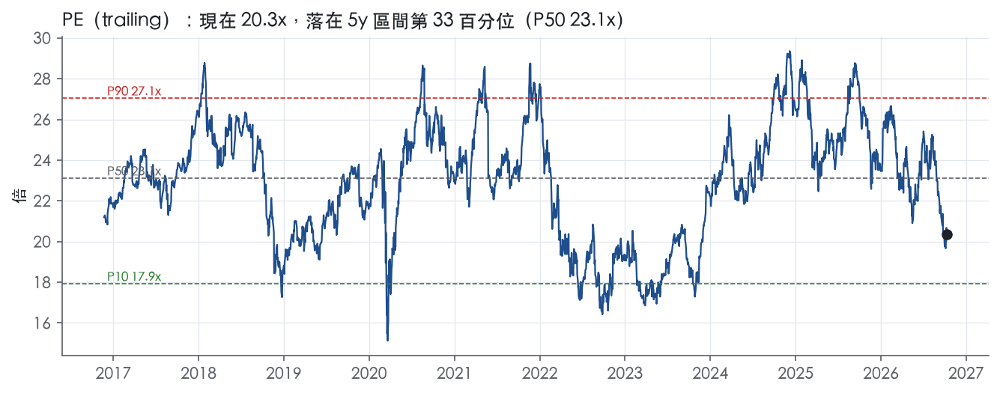
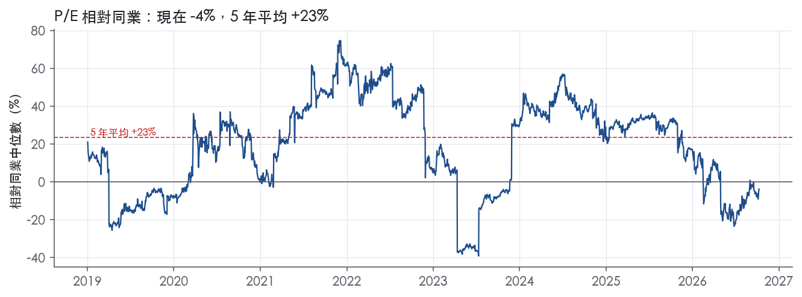
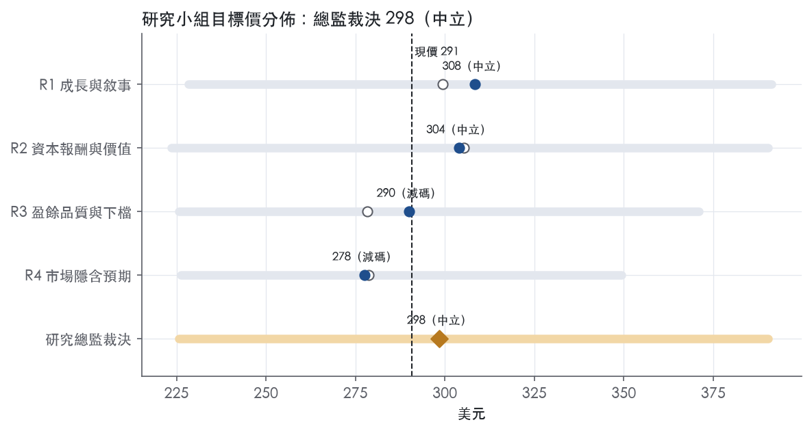
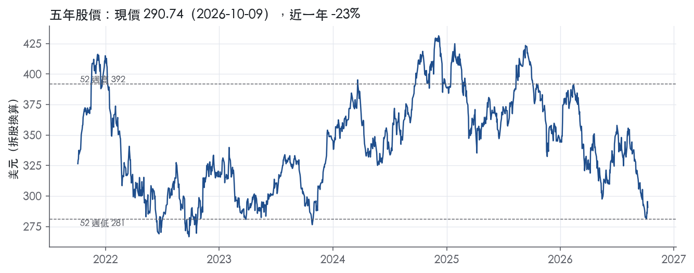

評等總表 › 非必需消費 › HD
營益率未修、倍數守市場持平，中性｜評等 中立｜目標價 298
| 報告日 | 評等 | 目標價 | 當時股價 | 超額報酬 |
|---|---|---|---|---|
| 2026-10-09 | 中立 | 298 | 291 | -4.2% |
| 評等 | 中立（邊界，鄰近減碼） |
| 12 個月目標價 | 298 美元 |
| 現價 | 290.74 美元（2026-10-09） |
| 預期報酬 | 股價 +2.6%＋股息 3.2%＝總報酬 +5.8%；同業籃門檻 10.1%，超額 -4.2% |
| 估值方法 | P/E 20.1x，套在第 5–8 季的EPS（也就是一年後的未來四季） |
| 三情境 | 熊 226／基準 300／牛 390 |
| 研究流程 | 四位研究員兩輪辯論＋研究總監裁決 |
| 資料來源 | SEC EDGAR XBRL、Tiingo、FRED（全免費） |
營益率未修、倍數守市場持平，中性（研究總監裁決，四位研究員兩輪辯論後）
評等 中立（邊界，鄰近減碼）｜12 個月目標價 298 美元（總監三情境機率加權 300 與研究員中位數 297 各半）｜現價 290.74（2026-10-09）
預期報酬：股價 +2.6%＋股息 3.2%＝總報酬 +5.8%。同業籃門檻 10.1%，超額 -4.2%，離減碼的分界不到三個百分點，屬邊界評等（落在其他級距的機率約四成）。
估值方法：P/E 20.1x，套在第 5–8 季的EPS（也就是一年後的未來四季）。三情境：熊 226（24%）／基準 300（56%）／牛 390（20%）。
什麼會讓研究總監改變看法：FY2027Q3與Q4連兩季SG&A年增率低於營收且fiscal 2027財測營益率上緣高於12.8%，營益率上調、倍數往P75轉偏多；Q3同店轉負或fiscal 2027財測營收中值低於2.5%，倍數退到P25 18.6x轉偏空。
| 過去四季（實際，FY2027Q2） | 未來四季 | 第 5–8 季 | 第 9–12 季 | |
|---|---|---|---|---|
| 營收（B） | 169.2B | 173.9B | 180.0B | 187.2B |
| 營收成長 | 2.5% | 2.8% | 3.5% | 4.0% |
| 營業利益率 | 12.4% | 12.5% | 12.3% | 12.3% |
| EPS（美元） | 14.29 | 14.63 | 14.90 | 15.54 |
| EPS 成長 | -2.9% | 2.3% | 1.9% | 4.3% |
| 每股股息（美元） | 9.26 | 9.26 | 9.26 | 9.26 |
| P/E（現價） | 20.3x | 19.9x | 19.5x | 18.7x |
| 股息殖利率（現價） | 3.2% | 3.2% | 3.2% | 3.2% |
過去四季為申報數字；預測為研究總監的假設、程式計算。倍數與殖利率都用現價計算，用來看現價對應各期獲利的高低。
| 情境 | 機率（歷史） | 故事 | 未來四季營收成長 | 第 5–8 季營益率 | 倍數 | 目標價 | 股價漲跌 |
|---|---|---|---|---|---|---|---|
| 熊 | 24%（24%） | 對應風險表第1、2、5條：同店轉負、IEEPA退款消失而投入成本延續、SG&A黏性去槓桿、關稅使毛利率偏離33.1%，倍數落到前瞻帶P10 | 0.5% | 11.4% | 17.6x | 226 | -22.4% |
| 基準 | 56%（58%） | GMS滿週年後回到有機成長約3%，退款退場後營益率在12.3%落底，EPS低個位數成長，FCF先降槓桿，倍數與市場持平 | 2.8% | 12.3% | 20.1x | 300 | 3.0% |
| 牛 | 20%（18%） | 房貸利率回落帶動成屋交易，同店回3%以上、SG&A重新槓桿、ROIC止跌，倍數回前瞻帶P75 | 5.0% | 13.2% | 22.9x | 390 | 34.2% |
目標價由程式依研究總監的驅動與倍數計算；機率由研究總監給定。括號內是歷史頻率：把這檔股票過去十年 12 個月報酬的波動形狀，置中在基準情境，結果落在各情境附近的比例。

四位研究員用不同方法各自估值，回應研究總監的質疑後交出第二輪，最後由總監逐點裁決。各研究員的主張見第七章，裁決理由見第八章，完整論證見《研究底稿》。
| 立場（一輪→二輪） | 加權目標價（一輪→二輪） | 評等（一輪→二輪） | 第二輪倍數 | 熊～牛目標價 | |
|---|---|---|---|---|---|
| R1 成長與敘事 | 中性→中性 | 299→308 | 中立→中立 | 21.0x | 228～391 |
| R2 資本報酬與價值 | 中性→中性 | 305→304 | 中立→中立 | 20.1x | 224～390 |
| R3 盈餘品質與下檔 | 中性→看空 | 278→290 | 減碼→減碼 | 19.5x | 226～371 |
| R4 市場隱含預期 | 看空→看空 | 279→278 | 減碼→減碼 | 18.5x | 226～349 |
| 研究總監裁決 | 中性 | 298 | 中立 | 20.1x | 226～390 |
目標價由程式依各自的驅動與倍數計算；評等＝機率加權總報酬 − 同業籃門檻。
Home Depot 是全球最大的居家修繕零售商，以 fiscal 2025 淨銷售額計算¹。公司提供廣泛的居家修繕產品、建材、園藝產品、裝潢產品與設施 MRO 產品，透過實體門市與線上銷售，並提供居家修繕安裝服務、工具與設備租賃¹。截至 fiscal 2025 年底，公司在美國（含波多黎各、美屬維京群島及關島）、加拿大與墨西哥共營運 2,359 間門市，平均每間約 104,000 平方英尺室內賣場加 24,000 平方英尺室外園藝區¹。公司服務兩大客群——消費者（含 DIY 與 DIFM）與 Pro 專業客戶，並以此設計差異化的商品與服務組合¹。本質上這是一家靠龐大實體零售網絡＋併購來的專業建材配送（SRS/GMS）雙引擎驅動的居家修繕平台。
公司揭露上採「地理聚合」而非商品分部，美國、加拿大、墨西哥三個地理營運分部被合併為一個應報告分部（Primary segment），10-K 未揭露各地理區域或各商品線各自佔營收比重¹。Fiscal 2024 收購 SRS（住宅專業貿易配送商，涵蓋屋頂、建材、園藝與泳池供應）之後，fiscal 2025 由 SRS 再收購 GMS（石膏板、天花板、鋼構及其他建築產品的專業配送商），截至 fiscal 2025 年底 SRS（含 GMS）在美加合計營運超過 1,250 個據點¹。收購後 SRS 分為四條業務線：屋頂與建材、室內與建築產品、園藝、泳池，每條業務線被認定為一個營運分部，但均非應報告分部¹。門市端典型單店庫存約 30,000 至 40,000 項商品，涵蓋家電、浴室、建材、電器、地板、五金、室內園藝、廚房窗飾、照明、木材、木作、室外園藝、塗料、水管、電動工具、收納等商品部門¹。公司也經營多個垂直電商站點，包括 homedepot.com、hdsupply.com、srsdistribution.com、gms.com 等¹。SRS/GMS 的併入是過去兩年最大的結構變化，把 Home Depot 從單純消費端零售商往 Pro 專業配送通路延伸，拉高了對 B2B/專業工程需求的曝險。
客戶面分三群：DIY（自行購買並完成專案的屋主）、Pro（含裝修商、總承包商、建商、物業維護人員及水電油漆等專業工種，服務對象包含住宅、多戶住宅、旅館及資料中心等商業設施）、以及介於兩者之間、委託 Pro 代為施工的 DIFM 客戶¹。地區上美加墨為主要市場，fiscal 2025 公司員工約 472,400 人，其中美國占 89.4%、加拿大 6.7%、墨西哥 3.8%¹。通路上公司強調「互聯」體驗：fiscal 2025 美國線上訂單約 50% 透過門市完成履約，並提供 BOSS、BOPIS、BODFS、BORIS 等多種取貨/配送組合，SRS 各分店也可直送客戶工地¹。截至 FY2027Q2（2026-08-02）季報，公司門市總數 2,364 間、SRS 據點逾 1,340 個，橫跨美國 50 州、哥倫比亞特區、波多黎各、美屬維京群島、關島、加拿大 10 省及墨西哥，員工超過 470,000 人²。地理集中度高、對美國住宅/裝修景氣敏感，Pro 與 SRS 通路的擴張是分散消費端波動的主要手段。
FY2026Q4（2026-02-01 結束）營收 38.20B、年增 -3.8%，營益率降至 10.1%，是近八季最弱的一季（is.revenue）。FY2027Q1（2026-05-03 結束）營收 41.77B，年增 4.8%，同店銷售成長 0.6%、美國同店成長 0.4%，淨利 3.29B、每股盈餘 3.30 美元，較去年同期 3.45 美元下滑³；當季 CEO Ted Decker 表示「本季表現符合預期，消費者需求與 fiscal 2025 整體相近，儘管消費者不確定性與房市可負擔性壓力上升」³，公司同時重申 fiscal 2026 財測。FY2027Q2（2026-08-02 結束）營收 47.86B、年增 5.7%，優於公司預期，同店銷售成長 1.7%（美國 1.3%）；淨利 4.77B，每股盈餘 4.79 美元，優於去年同期 4.58 美元，調整後每股盈餘 4.92 美元²。CFO Richard McPhail 表示「本季業績超出預期，我們看到業務全面需求強勁，客戶持續投入小型專案」²，公司並重申 fiscal 2026 財測：總營收成長約 2.5%–4.5%、同店銷售約持平至 2.0%、毛利率約 33.1%、營益率約 12.4%–12.6%、調整後營益率約 12.8%–13.0%、每股盈餘自 14.23 美元成長約持平至 4.0%²。整體 LTM（至 FY2027Q2）營收 169.18B、EBITDA 24.52B、FCF 15.10B。從 FY2026Q4 的疲弱到 FY2027Q1/Q2 的回升，顯示 SRS/GMS 併購效果與小型居家專案需求正逐步抵消房市交易低迷帶來的拖累，但營益率仍受 SG&A 成長快於營收（FY2027Q2 SG&A 年增 8.5% vs 營收 5.7%）壓縮。
公司表示將聚焦於「發揮品牌、卓越客戶服務、居家修繕產品權威地位、熟練員工與文化、規模、優質不動產組合、數位互聯體驗、供應鏈網絡，以及與 Pro 客戶的深厚關係」等差異化競爭優勢，以把握高度分散市場中的顯著成長機會¹。fiscal 2025 的三項戰略投資方向為：鞏固核心與文化以支持員工提供最佳客戶體驗；提供無縫互聯的客戶體驗，不論顧客選擇在店內或透過數位平台購物；以及透過差異化價值主張與能力生態系統贏得 Pro 客戶¹。資本配置原則依序為：優先再投資於業務以驅動高於市場的成長；其次支付季度股息；第三在前兩者之後將多餘現金透過股票回購返還股東¹。Fiscal 2025 公司資本支出 3.7B 美元，投入新店建設、既有店維護、互聯體驗及強化 Pro 服務等倡議，SRS 並收購 GMS 以加速成為多品類建材配送龍頭的願景¹。Fiscal 2025 公司以現金股息方式向股東返還 9.2B 美元，並於 2025 年 2 月宣布季度現金股息自每股 2.25 美元上調 2.2% 至 2.30 美元¹。公司並表示自 fiscal 2023 啟動為期五年、約新開 80 間門市的計畫，fiscal 2025 開了 12 間新店，預計 fiscal 2027 完成約 80 店目標後，轉為每年新開約 15 至 20 間門市¹。SRS/GMS 併購與 Pro 生態系統投資是公司敘事中最具體的成長引擎，但 10-K 對各分部財務貢獻披露有限，投資人只能靠整體合併數字與管理層口頭說法交叉驗證成效。目前營益率逐年下滑（FY2024 14.2% → FY2026 財測 12.4–12.6%）顯示整合成本與 SG&A 槓桿仍是壓力來源，而非單純規模效益。在房市交易量尚未回暖之前，公司成長動能更多來自 Pro/SRS 通路擴張與小型專案需求，而非大型裝修案件回升。

Home Depot 有寬護城河，主要來源是北美居家修繕零售的規模成本優勢，其次是品牌；我們有把握其 ROIC 在未來 10 年以上仍高於資本成本。趨勢判為變窄，理由有三：ROIC 連續三年下滑，營業利益率降到十年最低，新併入的 SRS/GMS 專業配送業務護城河又弱於零售本業。
最主要的來源是成本優勢。Home Depot 以 fiscal 2025 淨銷售額計是全球最大的居家修繕零售商，年底營運 2,359 間門市¹。公司以集中預測、集中補貨的系統管理絕大多數門市商品，配送網絡包括快速調撥中心、大宗物流中心與 FDC 等多種平台¹。fiscal 2025 約 50% 的美國線上訂單透過門市履約，管理層自稱其優質不動產布局提供明顯的競爭優勢¹。門市同時是倉庫和取貨點，最後一哩成本因此能攤在既有店網上，這是純電商與區域型五金行複製不了的固定成本槓桿。
第二個來源是無形資產。公司表示其品牌是北美辨識度最高的品牌之一，The Home Depot 商標具重大價值¹。HDX、Husky、Glacier Bay、Lifeproof 等自有品牌通常毛利高於全國性品牌¹。專利則撐不起護城河，公司自己也說沒有任何單一專利對業務不可或缺¹。
第三個來源是轉換成本，只存在於 Pro 客群，而且程度輕微。綁定 Pro 的工具包括專屬業務團隊、Pro Xtra 會員計畫、Pro Trade Credit 商業信用，以及訂單與專案管理工具¹。這些工具降低了 Pro 的採購摩擦，但不構成硬性鎖定；DIY 客戶則完全沒有轉換成本。網路效應與效率規模我們找不到證據，不列入。
整體看得到，但近三年的走勢與「寬」的評級有衝突。支持寬評級的數字有三組。第一，ROIC 有資料的 9 年全部高於資本成本代理值 10.2%，十年平均 41.6%，平均減資本成本 31.4%。第二，毛利率十年平均 33.8%、標準差只有 0.4%，連 FY2024 營收衰退的年度也守住，說明公司沒有靠降價換量。第三，營業利益率標準差 0.7%、FCF 利潤率標準差 1.5%，獲利穩定度符合寬護城河的樣貌。
衝突在於 ROIC 從 FY2022 的 50.7%一路降到 FY2026 的 25.3%，營業利益率也從十年高點 15.3% 降到 12.7%。下滑的時點正好落在 FY2024 收購 SRS、FY2025 再收購 GMS，同期淨負債從 40.35B 升到 54.38B。我們認為 ROIC 下降主要來自併購擴大了投入資本，加上配送業務報酬率較低的組合稀釋，而不是零售本業的定價權流失，因為毛利率沒有跟著崩。最新 ROIC 25.3% 仍高於資本成本 10.2%，緩衝足夠，所以評級維持寬；但下滑方向不容忽視，趨勢下修為變窄。ROE 的十年平均與標準差因股東權益極小甚至為負而失真，不作為判斷依據。
第一個風險是數位化壓縮實體規模優勢。公司自己承認，線上與數位能力以及 AI 工具降低了進入門檻，並提高價格透明度與比價便利，使競爭加劇¹。
第二個風險是業務組合轉向配送業務。SRS（含 GMS）在美加營運超過 1,250 個據點，每個據點大多需要配送中心、物料搬運與運輸設備及庫存¹。這類資本密集、地方競爭的批發配送業務，ROIC 天花板低於門市零售，占比愈高，整體報酬率愈往下拉。
第三個風險是費用失去槓桿。營業利益率持續低於十年平均 14.2%，代表人力、科技與整合投入的成長快於營收；如果房市交易量長期低迷，規模固定成本的優勢會反過來變成負擔。
第四個風險來自同業與通路，包括同業型態的居家修繕零售商、量販會員店、專業建材批發商，以及直接賣給終端客戶的製造商¹。在 Pro 戰場上，這些對手提供的帳期與配送條件和 Home Depot 差距不大，轉換成本難以加深。
寬護城河支持目標倍數相對同業溢價，但溢價幅度應低於過去五年的歷史水準，因為 ROIC 與營業利益率的趨勢在變窄。目前 P/E 20.3x（px 快照）低於五年中位數 23.1x，我們認為這反映了合理的報酬率下修；目標倍數不宜假設會回到五年中位數。如果未來兩年 ROIC 止跌、營業利益率回到十年平均附近，溢價幅度才有理由擴大。
| 指標 | 最新 | 十年平均 | 標準差 | 最低 | 最高 |
|---|---|---|---|---|---|
| ROIC | 25.3% | 41.6% | 7.9% | 25.3% | 50.7% |
| 毛利率 | 33.3% | 33.8% | 0.4% | 33.3% | 34.3% |
| 營業利益率 | 12.7% | 14.2% | 0.7% | 12.7% | 15.3% |
| FCF 利潤率 | 7.7% | 9.7% | 1.5% | 7.3% | 12.4% |
| ROE | 145.5% | -1458.1% | 9797.3% | -25529.9% | 14061.2% |
程式計算。資本成本代理值（10 年債＋5%）：10.2%；ROIC 平均減資本成本：31.4%；ROIC 有資料的 9 年中，高於資本成本 9 年。
Home Depot 的盈餘品質整體偏高，CFO／淨利 LTM 1.32x、三年均值 1.30x、十年均值 1.22x 全數綠燈，代表會計盈餘長期有現金支撐。但淨負債／EBITDA 由十年均值 1.63x 升到 LTM 2.07x 轉為黃燈，加上應收帳款與存貨成長率同時高於營收成長率，顯示近一年槓桿與營運資金是觀察重點，不是現金轉換本身出問題。
現金持續跟上甚至超過報表盈餘，沒有「紙上富貴」的跡象。CFO／淨利 LTM 1.32x、近三年 1.30x、十年均值 1.22x，三個時間窗都在綠燈門檻之上。FCF／淨利 LTM 1.06x、三年 1.06x、十年 1.01x，顯示即使扣掉資本支出，自由現金流仍能覆蓋淨利。應計比率 LTM -4.2%、三年 -5.3%、十年 -4.4%，全部為負值，代表盈餘的現金成分高於應計成分，是典型的「真現金」盈餘結構。SBC／營收僅 0.3%，十年維持同一水位，代表股權薪酬不是撐高利潤率的來源。
FY2026Q2 新聞稿揭露的調整後稀釋 EPS 為 4.92 美元，高於 GAAP 稀釋 EPS 4.79 美元，兩者缺口約 0.13 美元²。公司明確定義「adjusted operating income, adjusted operating margin, and adjusted diluted earnings per share are non-GAAP financial measures」，但本次取得的新聞稿節錄未附完整調節表，無法逐項列出金額²。考量同期 SRS 完成對 GMS 的收購，商譽由 19.619B 增至 22.899B、無形資產淨額由 8.770B 增至 10.482B，調整項目很可能以併購相關無形資產攤銷為主²。全年指引同樣區分營業利益率 12.4%–12.6% 與調整後營業利益率 12.8%–13.0%，兩者差距約 40bp，方向與攤銷假設一致²。這類併購攤銷是真實的經濟成本（買下的無形資產終究要被消耗），估值時不應完全加回，只能視為「非現金但非一次性」的費用。
槓桿是過去三年唯一真正上升的風險項，但來源清楚是併購而非經營面惡化。淨負債由 FY2023 的 40.44B 一路上升到 FY2026 的 54.38B，對應同期 FY2024 收購 SRS、FY2025 由 SRS 完成收購 GMS¹。利息保障倍數 LTM 8.70x、三年 9.70x、十年 13.0x 雖然逐年下滑，但仍遠高於紅燈門檻 3.00x，付息能力沒有立即風險。資本配置紀律清楚：公司明定「reinvest in our business」、「pay a quarterly dividend」、「return excess cash... through share repurchases」的順序¹，FY2025 資本支出 3.7B 美元、股東現金股利 9.2B 美元，季度股利由 2.25 美元調升至 2.30 美元¹。稀釋股數十年均值下降 2.4%，近三年降 1.0%，LTM 持平於 0.0%，代表回購放緩但尚未轉為增發；（股利＋回購）／淨利 LTM 64.8%、三年 79.1%、十年 102.8%，過去十年平均超過 100%，隱含部分年度靠舉債維持股東回饋，與同期淨負債持續擴張的走勢吻合。
淨負債／EBITDA 黃燈（LTM 2.07x vs 十年均值 1.63x）：這是真問題但有清楚解釋、非惡化型紅旗。槓桿上升時間點對應 FY2024 SRS 收購與 FY2025 GMS 併入 SRS，而非同店銷售或毛利率結構性下滑（毛利率十年僅由 34.2% 降到 33.3%，波動很小）。只要利息保障倍數仍維持 8x 以上的綠燈水位，這條黃燈應視為「併購後過渡期槓桿」，而非盈餘品質惡化。
應收帳款成長－營收成長 +10.9pp（黃燈）：主因是會計口徑，不是客戶付款變差。資產負債表顯示應收帳款淨額由 FY2025Q2 的 5.878B 增至 FY2026Q2 的 6.963B，增幅明顯快於同期營收增速 5.7%²；GMS 併入 SRS 使專業貿易客戶（Pro）應收帳款與貿易信用規模一併併表計入，10-K 亦提及「enhanced credit offerings」與「Pro Trade Credit program」擴張¹。在沒有逾期率或壞帳提列惡化的證據下，判定為併購合併口徑造成的假警報，但下一季仍需確認是否持續擴大。
存貨成長－營收成長 +6.8pp（黃燈）：同樣主要是併購效應，部分為正常的建材/專業經銷商庫存結構。存貨由 24.843B 增至 26.847B，SRS／GMS 屋頂、建材、景觀與泳池用品屬經銷商型庫存，周轉天數本就與零售門店不同²。由於現金轉換（CFO／淨利、應計比率）並未隨之惡化，可判定存貨增速尚未侵蝕現金盈餘，暫列為可解釋紅旗，但若未來幾季營收成長放緩、存貨仍加速累積，則要重新檢視去化風險。
SBC／營收長期僅 0.3%（無紅旗但值得一提）：此項沒有觸發任何燈號，股權薪酬對盈餘的稀釋效果極小，十年維持同一水準，排除「用股權薪酬灌水利潤」的疑慮。
估值應以 GAAP 盈餘為主幹，非 GAAP 調整後 EPS（4.92 美元）僅作為參考上限，因為調整項很可能包含併購無形資產攤銷，是會持續發生的真實成本，不宜全數加回。現金品質本身不需要對盈餘打折——CFO／FCF 對淨利的覆蓋率長期 ≥1x、應計比率持續為負，支持用 GAAP 淨利直接估值而不必額外保守化。但淨負債／EBITDA 已升至 2.07x，加上近一年應收、存貨增速高於營收，建議在 EV/EBITDA 類倍數上給予比歷史中位數（5年 P50 15.8x）略低的位置，反映併購整合期的槓桿與營運資金不確定性，而非反映盈餘造假風險。
| 項目 | LTM | 近三年 | 十年 | 燈號 | 規則 |
|---|---|---|---|---|---|
| 營業現金流／淨利 | 1.32x | 1.30x | 1.22x | 綠 | ≥1.00x 綠、<0.80x 紅 |
| 自由現金流／淨利 | 1.06x | 1.06x | 1.01x | 綠 | ≥0.90x 綠、<0.60x 紅 |
| 應計比率（(淨利−CFO)／平均總資產） | -4.2% | -5.3% | -4.4% | 綠 | ≤0.0% 綠、>5.0% 紅 |
| SBC／營收 | 0.3% | 0.3% | 0.3% | 綠 | ≤3.0% 綠、>8.0% 紅 |
| 淨負債／EBITDA | 2.07x | 1.98x | 1.63x | 黃 | ≤1.50x 綠、>3.00x 紅 |
| 利息保障倍數（營業利益／利息） | 8.70x | 9.70x | 13.0x | 綠 | ≥8.00x 綠、<3.00x 紅 |
| 稀釋股數年變動 | 0.0% | -1.0% | -2.4% | 綠 | ≤0.0% 綠、>3.0% 紅 |
| （股利＋回購）／淨利 | 64.8% | 79.1% | 102.8% | 綠 | ≥50.0% 綠、<0.0% 紅 |
| 應收帳款成長 − 營收成長（FY2026） | +10.9pp | — | — | 黃 | ≤5pp 綠、>15pp 紅 |
| 存貨成長 − 營收成長（FY2026） | +6.8pp | — | — | 黃 | ≤5pp 綠、>15pp 紅 |
程式計算；燈號以 LTM（無則近三年平均）判定。
| 風險 | 觸發指標（看什麼數字、在哪裡看） | 對 EPS 的影響方向與粗略幅度 | 未來 12 個月發生機率（高／中／低） | 出處 |
|---|---|---|---|---|
| 營益率結構性下滑：SG&A 成長快於營收，整合成本侵蝕槓桿 | 每季 10-Q/8-K 營益率（已從 FY2024 14.2% 降至 FY2026 財測 12.4–12.6%）；SG&A 年增率 vs 營收年增率（FY2027Q2 SG&A +8.5% vs 營收 +5.7%） | 負向，中～大：營益率每降 50bp 直接壓縮淨利與 EPS | 高 | ¹ |
| 房市/消費信貸環境走弱，同店銷售轉負 | 每季同店銷售成長率（FY2027Q1 美國 +0.4%、FY2027Q2 美國 +1.3%，仍處低個位數）；UST10Y／房貸利率走勢（5.22%） | 負向，中：同店銷售每降 1pt，營收與毛利同步縮水 | 中 | ³² |
| SRS/GMS 併購整合不如預期，無法實現綜效 | SRS/GMS 門市據點數（現逾 1,340 個）年增趨勢；商譽減損公告；併購後毛利率/營益率是否優於合併前水準 | 負向，中～大：若出現商譽減損，一次性拖累 EPS；若綜效不現，長期壓低毛利率 | 中 | ¹ |
| 技術基礎設施/網路安全事故導致營運中斷 | 8-K 重大事件揭露；是否發生客戶資料外洩或系統停機公告 | 負向，方向明確、幅度視事件規模而定（原文未給百分比） | 低～中 | 10-K 年報 FY2026 Item 1A（風險因素） |
| 關稅與供應鏈政策變動推升進口成本 | 美國關稅政策公告（IEEPA tariff refunds 已計入財測）；毛利率是否偏離財測 33.1% | 負向，中：財測已部分沖銷，若政策加碼則幅度擴大 | 中 | 8-K 財報新聞稿（2026-08-18） |
營益率結構性下滑是五條裡機率最高、也最容易被監測的一條。公司公布的 fiscal 2026 財測營益率為 12.4%–12.6%、調整後 12.8%–13.0%，相較 FY2024 的 14.2% 已下降超過 150bp²【量化底稿：】。資料包年度序列顯示營益率從 FY2023 的 15.3% 一路降到 FY2026 財測區間的中位數，降幅橫跨近三年，不是單季波動【量化底稿：~FY2026】。這條風險可每季用 SG&A 年增率對比營收年增率直接驗證，FY2027Q2 已出現 SG&A（+8.5%）明顯快於營收（+5.7%）的落差【判，依 8-K 財報文字推算，未換算具體金額】。只要這個缺口不收斂，EPS 成長就會持續落後營收成長。
房市與消費信貸環境走弱是公司自己在財測與財報新聞稿反覆強調的敏感因子，10-K 列為前瞻聲明風險項之一，包含「房市與居家修繕市場狀況」「房貸、房屋淨值貸款及消費與貿易信貸狀況」¹。可觀測指標是公司每季公布的同店銷售成長率——目前仍是正值但偏低（FY2027Q1 美國 +0.4%、FY2027Q2 美國 +1.3%）³²，同時可搭配 10 年期公債殖利率（現為 5.22%）判斷房貸利率壓力是否加劇【量化底稿：】。CFO 在 FY2027Q1 法說提到「消費者不確定性與房市可負擔性壓力上升」，顯示管理層自己也承認這是壓力來源³。
SRS/GMS 整合風險是 10-K 明確點名的策略風險：「我們可能無法實現這些交易的預期效益」「整合是複雜且耗時的過程，若整合不完全成功或延遲，我們可能無法實現預期綜效、成本節省、強化能力或其他併購效益」，且可能導致「商譽或其他無形資產減損」⁴。10-K 對 SRS/GMS 各自財務貢獻揭露有限（地理聚合為單一應報告分部），投資人只能用整體合併數字做間接驗證，這本身就是監測上的弱點。觀測方式是緊盯未來財報是否出現商譽減損公告，以及 SRS 據點數成長是否伴隨毛利率改善而非單純規模擴張。
技術基礎設施與網路安全風險在 10-K 用了大量篇幅描述，包括「未經授權方包括犯罪威脅行為者、國家級行為者或內部人士過去已經取得，且將持續嘗試取得這些系統與資料的存取權限」⁴，以及地緣政治衝突升高國家級網攻風險的描述⁴。這條風險無法用財報數字提前預測，只能靠 8-K 重大事件揭露事後確認，機率判定為低～中，但一旦發生，對品牌信任與客戶資料合規成本的衝擊方向明確。
關稅與供應鏈政策風險已被公司在財測中部分內部沖銷——新聞稿明確寫「財測已包含 IEEPA 關稅退款，預期可部分抵銷未規劃的燃料、能源及其他產品投入成本」²，顯示公司自己承認關稅是會動到成本線的變數，只是目前有政策性退款緩衝。10-K 同時列出「關稅的影響、貿易政策變化或限制，或國際貿易爭端」為前瞻聲明風險項之一¹。觀測指標是毛利率是否偏離財測的 33.1%，以及任何新關稅公告是否超出目前退款機制的覆蓋範圍。
10-K 未單獨量化揭露 SRS/GMS 併購後的分部毛利率或獲利貢獻，導致外部無法直接驗證併購綜效是否真實發生，只能用合併毛利率（FY2025 33.4%→FY2026 財測 33.1%、方向向下）間接推測整合成本仍在侵蝕毛利，這是比 10-K 條列風險更值得持續追蹤的資訊落差。
稀釋股數已連續十年下降（FY2017 的 1.23B 股降至 FY2026 的 0.99B 股）【量化底稿：~FY2026】，顯示公司長期靠大量庫藏股支撐每股盈餘成長；若自由現金流因營益率下滑或資本支出上升而收斂（FY2026 FCF 已降至 12.65B，低於 FY2025 的 16.32B），回購力道可能被迫縮手，屆時 EPS 成長將同時失去「營運槓桿」與「財務槓桿」兩個支撐點，這是 10-K 風險章節未直接點出、但從資料包趨勢可觀測的疊加風險。
現價 290.74 對應 trailing（過去四季）P/E 20.3x、EV/EBITDA 13.9x、EV/EBITA 15.7x、EV/Sales 2.0x、FCF 殖利率 5.2%。主要估值倍數 P/E 現在 20.3x，落在5 年區間第 33 百分位（P10／P50／P90 = 17.9x／23.1x／27.1x）。

把程式的機械基準預測放到現價下，市場付的前瞻倍數是：P/E（未來四季） 19.7x、P/E（第 5–8 季） 18.7x。反推 DCF 顯示市價隱含未來五年營收年成長 7.0%（WACC 9.0%、終值成長 3.0%、FCF 利潤率 9.3%，SBC 不加回）。
| 倍數 | 現在 | 5 年 P10 | 5 年 P50 | 5 年 P90 | 現在分位 | 全期 P50 |
|---|---|---|---|---|---|---|
| P/E | 20.3x | 17.9x | 23.1x | 27.1x | 32.6% | 23.3x |
| EV/EBITDA | 13.9x | 12.9x | 15.8x | 18.4x | 26.5% | 15.6x |
| EV/EBITA | 15.7x | 14.5x | 18.0x | 20.8x | 26.1% | 17.7x |
| EV/EBIT | 16.2x | 14.3x | 18.0x | 21.0x | 34.3% | 17.6x |
| EV/Sales | 2.0x | 2.2x | 2.5x | 2.9x | 0.6% | 2.4x |
| P/S | 1.7x | 1.9x | 2.2x | 2.6x | 0.6% | 2.2x |
| P/FCF | 19.2x | 19.3x | 24.4x | 31.7x | 9.6% | 22.8x |
trailing 倍數（股價 ÷ 過去四季）；分位以每個交易日計算。
同業籃：LOW, BLDR, FND, JCTC（SIC 5211 同業 4 家中，CY2025 營收最接近的 4 家）。評等門檻 10.1%：同業「倍數不變下持有一年」的隱含報酬中位數（＝ FCF 殖利率 ×(1＋g)＋g，g 為 5 年營收年複合成長並夾在 −2%～8%），每家夾在 0～15%、P/E 低於 5 倍視為資料可疑而排除，中位數再限制在 10 年債到 10 年債＋5% 之間。
| 代號 | 市值 | 5 年營收 CAGR | 營益率 | ROIC | P/E | 5 年 P/E 中位數 | EV/EBITDA | P/FCF | 隱含報酬 |
|---|---|---|---|---|---|---|---|---|---|
| HD | 290.2B | 4.5% | 12.4% | 25.3% | 20.3x | 23.1x | 13.9x | 19.2x | 9.9% |
| LOW | 104.3B | -0.8% | 11.4% | 32.3% | 15.7x | 19.5x | 11.0x | 14.9x | 5.9% |
| BLDR | 5.7B | 12.2% | 3.0% | 8.1% | 58.0x | 13.9x | 9.9x | 8.9x | 20.1% |
| FND | 4.9B | 14.1% | 6.4% | 9.3% | 21.1x | 36.6x | 8.7x | 23.0x | 12.7% |
| JCTC | 0.0B | -1.7% | -18.0% | — | — | — | — | 10.7x | 7.5% |
| 同業中位數 | 5.7% | 4.7% | 9.3% | 21.1x | 19.5x | 9.9x | 12.8x | 10.1% |
全部 trailing，程式以各公司 SEC XBRL 與 Tiingo 行情計算；第一列為本檔。
P/E 相對同業中位數：現在 -3.8%，過去 1 年平均 1.5%、3 年 22.2%、5 年 23.4%；EV/EBITDA 相對同業中位數：現在 40.4%，過去 1 年平均 33.1%、3 年 28.1%、5 年 21.9%。

事後實現前瞻倍數帶（P/E，2018-09-17..2025-09-15）：P10／P50／P90 = 17.6x／20.1x／26.1x。它是每個交易日的股價除以之後四季實際實現的指標；一年後，今天的第 5–8 季正是那時的未來四季，所以這條帶是 12 個月目標價的同口徑倍數。因為用的是事後實際而非當時預期，過去成長超乎預期的公司這條帶會偏低。
程式的機械基準（成長率從過去四季年增率三年收斂到 6%、利潤率持平）用 事後實現前瞻 P/E P50 估值得到 312（7.4%），市場現行前瞻倍數（現價 ÷ 基準 未來四季指標）一年後持平，套在基準 第 5–8 季指標得到 306。這兩個數字只是參考點，不是本報告的目標價；研究員對這個定價的回應在第七章。
下表是每位研究員第一輪（各自獨立）與第二輪（回應研究總監的質疑後）的結果。目標價全由程式依各自的假設計算。
| 立場（一輪→二輪） | 加權目標價（一輪→二輪） | 評等（一輪→二輪） | 第二輪倍數 | 熊～牛目標價 | |
|---|---|---|---|---|---|
| R1 成長與敘事 | 中性→中性 | 299→308 | 中立→中立 | 21.0x | 228～391 |
| R2 資本報酬與價值 | 中性→中性 | 305→304 | 中立→中立 | 20.1x | 224～390 |
| R3 盈餘品質與下檔 | 中性→看空 | 278→290 | 減碼→減碼 | 19.5x | 226～371 |
| R4 市場隱含預期 | 看空→看空 | 279→278 | 減碼→減碼 | 18.5x | 226～349 |
| 研究總監裁決 | 中性 | 298 | 中立 | 20.1x | 226～390 |
目標價由程式依各自的驅動與倍數計算；評等＝機率加權總報酬 − 同業籃門檻。
分歧度：第一輪 加權目標價 278～305（區間＝現價的 9%）· 倍數 18.5～21x · 立場 中性×3、看空×1；第二輪 加權目標價 278～308（區間＝現價的 11%）· 倍數 18.5～21x · 立場 中性×2、看空×2。

| 研究員 | 第二輪主張 | 堅持的理由 |
|---|---|---|
| R1 成長與敘事 | 中性；給未來四季P/E 21倍，對齊同業中位數21.1倍。 | 成長放緩已由溢價歸零吸收，倍數不再下調。 |
| R2 資本報酬與價值 | 中性；P/E 20.1倍，取前瞻P/E歷史中位數。 | 回購暫停已在倍數算法裡扣過，不再為此折價。 |
| R3 盈餘品質與下檔 | 偏空；P/E 19.5倍，低於前瞻P/E歷史中位數20.1倍。 | 營益率壓在12.3%，低於公司財測下緣12.4%。 |
| R4 市場隱含預期 | 偏空；P/E 18.5倍，低於市場持平的19.7倍。 | 熊情境機率給32%，高於歷史28%，因費用增速已超過營收。 |
每位研究員的逐條回應與完整論證見《研究底稿》（HD_研究底稿_2026-10-12.docx）。
| 分歧點 | R1 成長 | R2 價值 | R3 品質 | R4 預期 | 什麼資料會分出勝負 |
|---|---|---|---|---|---|
| 目標倍數（eps 主尺） | 21x@ntm，錨同業 P/E 中位數 21.1x、HD 溢價歸零 | 20.1x@q5_q8，前瞻帶 P50；回購缺席已在帶的分母扣過 | 19.5x@q5_q8，P25–P50 之間；理由含「利率高於帶窗期」與 ROIC 低於 LOW | 18.5x@q5_q8，P10–P25；GMS 滿週年、ROIC、槓桿、風險表第 1 條 | FY2027 ROIC是否止跌；SG&A 年增率是否連兩季低於營收 |
| 營收成長 y1／y2／y3 | 3.7／4.5／5.0%，y1 沿用機械基準 | 3.0／4.0／4.5% | 3.0／3.5／4.0% | 2.8／3.5／4.0%，GMS 交割夾在 FY2026Q3–Q4、NTM 幾乎全為有機 | FY2027Q3 營收年增（2026-11）；fiscal 2027 營收指引中值（2027-02 下旬） |
| 營益率 y1／y2／y3 | 12.5／12.3／12.3%，退款一次性、找不到費用退場 | 12.4／12.4／12.5% | 12.3／12.3／12.5%，y1 壓在財測下緣之下 | 12.4／12.4／12.5%，退款消失由整合費用滿週年抵銷 | FY2027Q3 GAAP 營益率對去年同期 12.9%；fiscal 2027 財測營益率上緣 |
| 情境機率與熊的深度 | 22／54／24，熊 17x、營益率 11.5% | 20／58／22，熊 17.6x、11.2%，無風險表 | 19／56／25，熊 17.6x、11.4%，接風險表 1、2、5 | 22／46／32，熊 16.5x、11.8%，接風險表 1、5 | 程式的歷史對照；熊與基準的距離是否對稱 |
分歧一：目標倍數——選 R2，20.1x eps@q5_q8。 決定性的參考點是程式的市場持平倍數 19.7x（現行前瞻倍數一年後持平），R2 的前瞻帶 P50 20.1x 與它幾乎重合。低於它的 R3、R4 等於主張市場一年後付得比現在少，但兩人的理由——ROIC 由 50.7% 降到 25.3%、淨負債 50.81B、回購暫停、風險表第 1 條——全是已公布事實。R3 第二輪自己承認 HD 對同業 P/E 溢價已從 5 年平均 23.4% 降到 −3.8%（同業表），「這段降評市場已經付過了」，而且「指不出哪一條是市場還沒反映的」。指不出來，倍數就沒有理由低於市場持平。R3 留下的「帶窗期利率低於現在的 5.22%，這是規則允許的理由」是誤讀原則 7：現價與門檻已反映 5.22%，拿利率壓倍數是重複計算；扣掉這條，19.5x 只剩「ROIC 低於 LOW 的 32.3%」，但 LOW 五年營收 CAGR −0.8%、trailing P/E 15.7x（同業表），HD 已處於相對同業折價，這個比較推不出 HD 要再折。R4 的 GMS 滿週年降檔已放進他的 rev_growth_y1 2.8%，再拿來壓倍數是雙重懲罰。
不選 R1 的 21x@ntm。口徑正確（trailing 帶配 ntm），但錨「同業 trailing P/E 中位數 21.1x」由 LOW 15.7x、FND 21.1x、BLDR 58.0x 三個差距極大的樣本決定，落在 FND 身上，不是穩定的錨；且在 trailing 口徑下「溢價歸零」意味一年後 P/E 從 20.3x（px 快照）升到 21x，等於主張市場重估，與他自己「成長未換檔、營益率不修」的結論矛盾。也不往 trailing 5 年 P50 23.1x靠，理由與護城河章一致：寬但趨勢變窄，ROIC 連續三年下滑、營益率落到十年最低 12.7%。R2 對 V4 的拒絕我接受：前瞻帶的分母是含每年 2%–3% 回購的實現 EPS（～FY2026），同一個 P50 套在股數 +0.2% 的 Q5–Q8 EPS 上，價格已機械性偏低，不必為回購缺席再折一次。
分歧二：營收路徑——選 R4，2.8／3.5／4.0%。 R4 用轉發的資產負債表把 GMS 交割夾在 FY2026Q3–Q4（商譽 19.619B→22.899B、無形資產 8.770B→10.482B，8-K 2026-08-18），滿週年最晚落在 NTM 頭兩季，NTM 幾乎全是有機成長。另一條證據在 8-K 本身：上半年營收已成長 5.3%，全年財測卻是 2.5%–4.5%，fiscal 2026 下半年（NTM 前半）必須低於全年中值。有機成長的構成是同店（Q2 1.7%、美國 1.3%，8-K 2026-08-18；Q1 可比交易數 −1.3%，8-K 2026-05-19）加約 15 家新店與 SRS 擴點（據點由 fiscal 2025 年底逾 1,250 增至 Q2 末逾 1,340，10-K、8-K），與 2.8% 的量級相符。R1 的 y1 3.7% 是沿用機械基準，沒有自己的證據；R2、R3 的 3.0% 與 R4 只差 0.2pp 但沒有夾出時點。y2／y3 取 3.5／4.0%：R3 的論點成立，十年內成長超過 6% 的年份（FY2018、FY2019、FY2021、FY2022，is.revenue 年度序列）都有房市週期或疫情推升，機械基準收斂到 6% 沒有依據，R2 的 4.5% 與 R1 的 5.0% 也拿不出 Q5–Q8 房市回暖的證據。
分歧三：營益率路徑——選 R1，12.5／12.3／12.3%。 y1 取財測中點：公司 Q2 超預期後重申 12.4%–12.6%（8-K 2026-08-18）；R3 把 y1 壓到下緣之下，證據只有「上半年 GAAP EPS 8.09 對 8.03 落在 flat–4% 底部」，那是 EPS 達成率的證據，不是營益率跌破財測的證據，且 y1 是 NTM 口徑而非財年。關鍵在 y2：財測明寫 IEEPA 退款「partially offset」計畫外的燃料、能源與投入成本（8-K 2026-08-18），退款是一次性，成本不見得是。R4 主張退款消失由「GMS 整合費用滿週年的 SG&A 槓桿」抵銷，但材料裡沒有整合費用的金額或退場時點；非 GAAP 調整項從商譽與無形資產的增幅看以攤銷為主（財務體質章），攤銷在損益表上獨立成行、不在 SG&A 裡，這個抵銷機制沒有證據。R1 的回答誠實：SG&A 年增率連兩季高於營收（Q1 5.7% 對 4.8%、Q2 8.5% 對 5.7%，8-K 2026-05-19、2026-08-18），「找不到哪一季哪條費用退場」，所以 y2 起點下移、y3 不給修復。R2／R4 的 y3 12.5% 同樣沒有機制。
分歧四：情境機率與熊的深度——牛取 R2，熊取 R3，機率從距離出發。 R4 的 46／32 不採：他墊高熊的三條理由裡，「風險表第 1 條觸發已成立」與「起點營益率低」都已放進基準驅動（營益率不修），再墊熊是算兩次，這是我第一輪給 R3 的 Q3 意見，同樣適用；「2027 年 2 月首份無退款指引」是三個情境共同會走過的日期，不是只壓下行的事件。R3 的熊經過 Q2 修正，用 FY2024 先例校準（當年營收 −3.0%、營益率 15.3%→14.2%、FY2024），並對應風險表第 1、2、5 條，比 R2「無風險表」的自訂熊更適合當我們的熊。牛取 R2：前瞻帶 P75 22.9x 配營益率回 13.5%，正是護城河章「ROIC 止跌、營益率回十年平均附近，溢價才有理由擴大」的條件；R1 的 25x@ntm 目標價相近但口徑不同，不混用。
漂移處理：沒有退回的漂移。 R3 向其他人中位數靠攏 56%，但三項改動（熊營益率上調、熊倍數 16.5x→17.6x、基準倍數 19.0x→19.5x）全是回應我第一輪 Q2、Q4，附 FY2024 先例與同業溢價表作證據，不是無證據靠攏；他的利率理由在分歧一已處理。R1 的 +3.0% 是遠離中位數的方向（G1 牛情境對稱化），R2、R4 幾乎未動。
與機械基準不同的驅動：
目標倍數 20.1x eps@q5_q8，錨在事後實現前瞻 P/E 帶 P50（P10／P25／P50／P75／P90＝17.6／18.6／20.1／22.9／26.1x），口徑是「一年後的倍數 × 一年後的未來四季」，可直接與帶比較。相對市場持平 19.7x 高 0.4x，等於主張市場一年後付的和現在差不多。相對自家 trailing 帶（1 年 P50 23.9x、3 年 24.2x、5 年 23.1x、10 年 23.3x）全部不取，折價理由是個股因素（ROIC 25.3%、營益率十年最低、護城河趨勢變窄），不是利率。相對同業：HD 對同業 P/E 中位數現在 −3.8%、3 年平均 22.2%、5 年 23.4%，不假設溢價回來；EV/EBITDA 對同業溢價 40.4%（5 年 21.9%），但同業中位數受 BLDR、FND 小市值樣本扭曲，只作旁證。相對大盤：資料包無大盤倍數，不另交代。基準目標價由程式算；我的驅動比 R2 第二輪（304.55）略低，目標價應落在其下方不遠。
機率的起點是歷史置中分布：牛相對基準約 +28%～+30%、熊約 −23%～−25%（依 R2、R3 第二輪程式表推估，精確值以程式對照為準），走到一半距離的頻率落在「≥+10% 26%／≥+20% 9%」與「≤−10% 29%／≤−20% 10%」之間，R2 的對照是 20／58／22、R3 是 21／54／26。熊略高於牛不是判斷偏空，而是熊離基準比牛近（R3 的熊 −23% 對 R2 的牛 +28%）；若把熊拉到對稱距離，兩尾各約 21%。我沒有在歷史之上再加碼熊：風險表第 1 條的觸發已放進基準驅動，2026-11 Q3 財報與 2027-02 財測是三個情境共同的驗證點。程式對照若顯示偏離超過 5 個百分點，向歷史靠。
差距在盈餘路徑，不在倍數。市場對基準預測付的前瞻 P/E 是 NTM 19.7x、Q5–Q8 18.7x，反推 DCF 隱含未來五年營收成長 7.0%（FCF 利潤率 9.3%、WACC 9.0%）；我們的營收 2.8%–4.0%、營益率停在 12.3%，兩者都達不到市價所需的「成長加速或利潤率回升」擇一——R4 的這個診斷我接受，差別是他寫進倍數、我寫進驅動。倍數 20.1x 與市場持平 19.7x 幾乎一致，所以我們與市場的分歧只剩 EPS 成長低個位數，加 3.2% 股息率（px 快照）後總報酬落在中個位數，追不上同業籃門檻 10.1%，評等中立、立場中性一致。不看空的理由是 FCF 殖利率 5.2%、CFO／淨利 1.32x（財務體質章）支撐持有，且降評已反映在 −3.8% 的同業折價裡；不看多的理由是 ROIC 與營益率都還沒止跌。
現價 290.74 → 點估目標價 300 → 機率加權目標價 300 → 目標價 298，差距拆成五段：成長順延 +15 美元（市場現行倍數 19.7x 一年後持平、獲利照機械基準）；倍數差 +6 美元（總監倍數 20.1x vs 市場持平倍數 19.7x，同一機械基準預測）；盈餘差 -12 美元（總監預測的第 5–8 季EPS 0.0B vs 機械基準 0.0B，同一倍數）；情境不對稱 +0 美元（機率加權減點估）；研究小組平均 -1 美元（總監機率加權 300 與研究員第二輪中位數 297 各半）。各段相加等於目標價減現價。本階段未接賣方共識，差距以市場隱含預期為對照。
| 驅動 | 機械基準 | 研究總監 | 差異 |
|---|---|---|---|
| 未來四季營收成長 | 3.7% | 2.8% | -0.9 pp |
| 第 5–8 季營收成長 | 4.8% | 3.5% | -1.3 pp |
| 第 9–12 季營收成長 | 6.0% | 4.0% | -2.0 pp |
| 未來四季營益率 | 12.4% | 12.5% | +0.1 pp |
| 第 5–8 季營益率 | 12.4% | 12.3% | -0.1 pp |
| 第 9–12 季營益率 | 12.4% | 12.3% | -0.1 pp |
| D&A／營收 | 2.1% | 2.1% | ＝ |
| 資本支出／營收 | 2.2% | 2.5% | +0.3 pp |
| SBC／營收 | 0.3% | 0.3% | ＝ |
| 稅率 | 23.9% | 24.3% | +0.4 pp |
| 股數年變動 | 0.2% | 0.2% | ＝ |
研究總監只寫偏移，未寫的沿用基準。
| 期 | 營收 | 成長 | 營益率 | 營業利益 | EBITDA | EBITA | 淨利 | EPS | FCF | 期末淨負債 |
|---|---|---|---|---|---|---|---|---|---|---|
| 未來四季 | 173.9B | 2.8% | 12.5% | 21.7B | 25.3B | 22.4B | 14.6B | 14.63 | 14.5B | 45.6B |
| 第 5–8 季 | 180.0B | 3.5% | 12.3% | 22.1B | 25.9B | 22.9B | 14.9B | 14.90 | 14.8B | 40.0B |
| 第 9–12 季 | 187.2B | 4.0% | 12.3% | 23.0B | 26.9B | 23.8B | 15.6B | 15.54 | 15.4B | 33.9B |
程式依上表的驅動計算；季度用最近四季季節性分攤；不含營運資金變動。
估值方法：P/E 20.1x，套在第 5–8 季的EPS（也就是一年後的未來四季）。研究總監目標倍數的錨：事後實現前瞻P/E帶P50，與市場持平19.7x幾乎重合；不取trailing 5 年 P50 23.1x因ROIC由50.7%降至25.3%、護城河趨勢變窄；不取同業中位數因樣本失真；回購缺席已在帶的分母扣過，不再折。
計算：EPS（第 5–8 季） 14.90 × 20.1x → 點估目標價 300（3.0%）；隱含 P/E（未來四季）20.5x、P/E（第 5–8 季）20.1x、EV/EBITDA（第 5–8 季）13.4x、FCF 殖利率（第 5–8 季）4.9%。
總監三情境機率加權目標價 300，研究員第二輪中位數 297，兩者各半＝目標價 298；預期報酬 股價 +2.6%＋股息 3.2%＝總報酬 +5.8%；減評等門檻 10.1%（同業籃隱含報酬中位數（LOW, BLDR, FND, JCTC））＝超額報酬 -4.2% → 評等 中立（超額 >+15% 買進、+5～+15% 加碼、±5% 中立、−5～−15% 減碼、<−15% 賣出）。同一份資料重開研究小組，超額約有正負四個百分點的雜訊（一個標準差，二十檔實測）；以此估計，評等落在其他級距的機率約四成。超額離減碼的分界不到三個百分點，應視為邊界評等。
| 情境 | 機率 | 未來四季成長 | 第 5–8 季成長 | 第 5–8 季營益率 | EPS（第 5–8 季） | 倍數 | 目標價 |
|---|---|---|---|---|---|---|---|
| 熊 | 24% | 0.5% | 0.0% | 11.4% | 12.82 | 17.6x | 226 |
| 基準 | 56% | 2.8% | 3.5% | 12.3% | 14.90 | 20.1x | 300 |
| 牛 | 20% | 5.0% | 6.5% | 13.2% | 17.04 | 22.9x | 390 |
| 主張 | 驗證日 | 看哪個數字 | 門檻 |
|---|---|---|---|
| FY2027Q3 GAAP營益率不崩也不回升 | 2026-11-30 | ≥12.3% 且 <12.9% | |
| 首份不含IEEPA退款的fiscal 2027財測不支持成長加速或利潤率回升 | 2027-03-15 | 8-K fiscal 2027 guidance 總營收成長中值與GAAP營益率上緣 | 營收中值≤4.5% 且 營益率上緣≤12.8% |
| ROIC在併購分母效應後止跌 | 2027-04-15 | ≥23% | |
| GMS滿週年後營收成長回到有機水準 | 2026-11-30 | FY2027Q3營收年增率 | ≤4.5% |
到期由程式結算（第 5 階段帳本）。
內文上標數字對應下列公司申報文件；未標上標的分析與判斷，是研究小組的觀點。報告中的每個數字都經程式逐一核對資料包或原文。
| 期 | 營收 | 成長 | 毛利率 | 營益率 | EBITDA | 淨利 | EPS | CFO | FCF | ROIC | 淨負債 | 稀釋股數 |
|---|---|---|---|---|---|---|---|---|---|---|---|---|
| FY2017 | 94.6B | — | 34.2% | 14.2% | 15.4B | 8.0B | 6.45 | 9.8B | 8.2B | — | 21.1B | 1.2B |
| FY2018 | 100.9B | 6.7% | 34.0% | 14.5% | 16.7B | 8.6B | 7.29 | 12.0B | 10.1B | 38.0% | 23.4B | 1.2B |
| FY2019 | 108.2B | 7.2% | 34.3% | 14.4% | 17.7B | 11.1B | 9.73 | 13.2B | 10.7B | 47.1% | 27.4B | 1.1B |
| FY2020 | 110.2B | 1.9% | 34.1% | 14.4% | 18.1B | 11.2B | 10.25 | 13.7B | 11.0B | 46.8% | 29.4B | 1.1B |
| FY2021 | 132.1B | 19.9% | 34.0% | 13.8% | 20.8B | 12.9B | 11.94 | 18.8B | 16.4B | 47.1% | 29.3B | 1.1B |
| FY2022 | 151.2B | 14.4% | 33.6% | 15.2% | 25.9B | 16.4B | 15.53 | 16.6B | 14.0B | 50.7% | 37.7B | 1.1B |
| FY2023 | 157.4B | 4.1% | 33.5% | 15.3% | 26.8B | 17.1B | 16.69 | 14.6B | 11.5B | 46.9% | 40.4B | 1.0B |
| FY2024 | 152.7B | -3.0% | 33.4% | 14.2% | 24.8B | 15.1B | 15.11 | 21.2B | 17.9B | 39.5% | 40.4B | 1.0B |
| FY2025 | 159.5B | 4.5% | 33.4% | 13.5% | 24.9B | 14.8B | 14.91 | 19.8B | 16.3B | 32.9% | 51.7B | 1.0B |
| FY2026 | 164.7B | 3.2% | 33.3% | 12.7% | 24.4B | 14.2B | 14.23 | 16.3B | 12.6B | 25.3% | 54.4B | 1.0B |
SEC XBRL；每股數據已依拆股換算到現在股數基準。EBITDA 空白 = 該年無形攤銷在 companyfacts 中缺 tag。
| 期 | 期末 | 推導 | 營收 | 毛利率 | 營益率 | EBITDA | 淨利 | EPS | CFO | FCF | 現金 | 總債務 |
|---|---|---|---|---|---|---|---|---|---|---|---|---|
| FY2024Q3 | 2023-10-29 | 37.7B | 33.8% | 14.3% | 6.1B | 3.8B | 3.81 | 4.2B | 3.6B | 2.1B | 41.9B | |
| FY2024Q4 | 2024-01-28 | Q4 | 34.8B | 33.1% | 11.9% | 4.9B | 2.8B | 2.80 | 4.7B | 3.9B | 3.8B | 44.1B |
| FY2025Q1 | 2024-04-28 | 36.4B | 34.1% | 13.9% | 5.9B | 3.6B | 3.63 | 5.5B | 4.7B | 4.3B | 42.8B | |
| FY2025Q2 | 2024-07-28 | 43.2B | 33.4% | 15.1% | 7.3B | 4.6B | 4.60 | 5.4B | 4.7B | 1.6B | 55.7B | |
| FY2025Q3 | 2024-10-27 | 40.2B | 33.4% | 13.5% | 6.2B | 3.6B | 3.67 | 4.2B | 3.4B | 1.5B | 54.6B | |
| FY2025Q4 | 2025-02-02 | Q4 | 39.7B | 32.8% | 11.3% | 5.4B | 3.0B | 3.02 | 4.7B | 3.6B | 1.7B | 53.4B |
| FY2026Q1 | 2025-05-04 | 39.9B | 33.8% | 12.9% | 6.0B | 3.4B | 3.45 | 4.3B | 3.5B | 1.4B | 52.3B | |
| FY2026Q2 | 2025-08-03 | 45.3B | 33.4% | 14.5% | 7.4B | 4.6B | 4.58 | 4.6B | 3.7B | 2.8B | 52.3B | |
| FY2026Q3 | 2025-11-02 | 41.4B | 33.4% | 12.9% | 6.2B | 3.6B | 3.62 | 4.0B | 3.1B | 1.7B | 56.0B | |
| FY2026Q4 | 2026-02-01 | Q4 | 38.2B | 32.6% | 10.1% | 4.8B | 2.6B | 2.58 | 3.3B | 2.3B | 1.4B | 55.8B |
| FY2027Q1 | 2026-05-03 | 41.8B | 33.0% | 11.9% | 5.9B | 3.3B | 3.30 | 6.0B | 5.2B | 1.6B | 53.5B | |
| FY2027Q2 | 2026-08-02 | 47.9B | 33.7% | 14.3% | 7.7B | 4.8B | 4.79 | 5.4B | 4.5B | 2.1B | 52.9B |
流量項目由 10-Q 的年初至今數拆成單季；Q4 = 年度 − 九個月。

本報告由 equity-desk 多代理系統產出，建置中版本，僅供內部研究與方法驗證，不構成投資建議。所有數字以 datapack.json 為準。